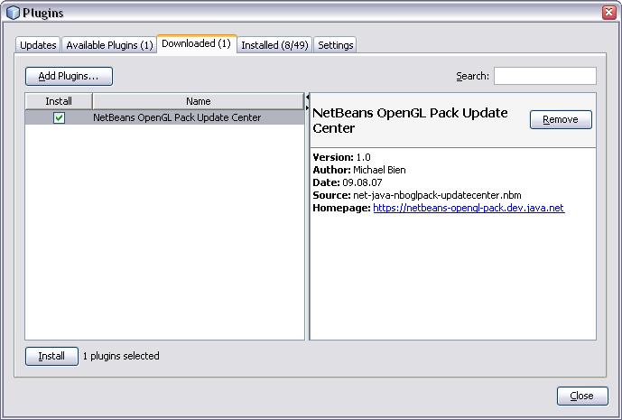
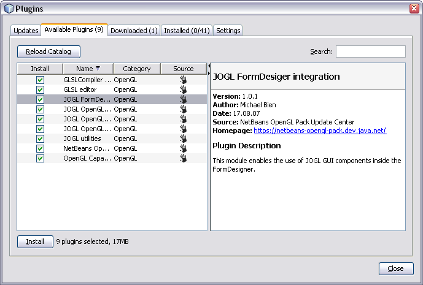

1. Start NetBeans and go to the Tools|Plugins dialog.
2. Add the Update Center to the Downloaded plugins list and press Install.

3. Switch to Settings tab and make sure that the Update Center is checked.
4. Switch to Available Plugins tab, search for OpenGL and check all modules you want to install.
5. Finish the installation by pressing Install.
